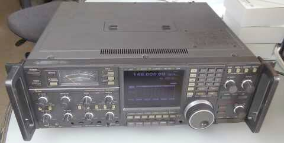 |
厳めしく見えます
ラック取付用の金物がそうさせているのでしょうか？
大きいです！
４２４ｗｘ１５０ｈｘ３４０ｄ（突起物別）
重量は、約２０ｋｇ
本機は、きっとそこから－１．５Ｋｇ！？ |
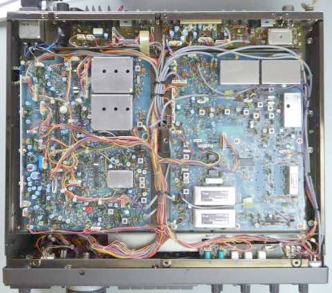 |
こちらは底面です
４５５ＫＨｚクリスタルフィルタ
±１．２ＫＨｚ／ＦＬ-４４Ａ
±２５０Ｈｚ／ＦＬ-５２Ａ
４５５ＫＨｚセラミックフィルタ
±１５ＫＨｚ ＣＦＷ４５５Ｂ
±７．５ＫＨｚ ＣＦＷ４５５Ｅ
±３ＫＨｚ ＣＦＷ４５５ＨＴ
±１．２ＫＨｚ ＣＦＪ４５５Ｋ５
離れて右に縦に見えるのが
±３ＫＨｚ／ＦＬ-１１７ |
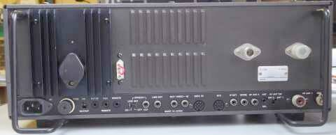 |
こちらが、リアパネル
縦置きしても大丈夫なように､丈夫なスタンドが用意（セット）されています |
|
| さて、ここからが本題と言うか、私の興味／趣味です |
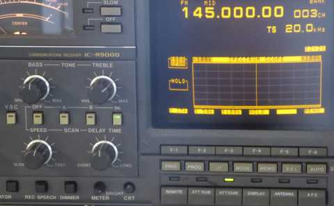 |
入手から２５年以上経っていると思われますが、大事に使われていたようで（使用頻度が低い？）、ＣＲＴの焼き付きも起きていません
が、湾曲した表示には、なんとなく抵抗があります
その昔のＴＶは全部こうだったのですが､いつの間にか液晶表示（フラット表示）に慣れてしまった？ようです |
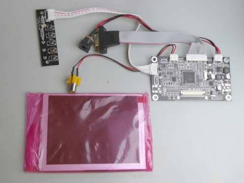 |
実は、こんな安価な５”の液晶ディスプレイ・ユニット（ＶＧＡコントロールボード＋５”ＬＣＤ）を海外から入手する手配をしていました
入力は、アナログＲＧＢとＮＴＳＣ（２ＣＨ：ＡＶ１ｏｒ２）の２種類に対応
接続端子はいかにも手作りっぽいものです（説明書の添付もありません）
もしかして、そのままＩＣ-Ｒ９０００のディスプレイと、置き換えることが出来るのではないかという期待がありました
電源容量１２Ｖ２Ａと書かれていたのですが､実際に測ってみると１６０ｍＡ程度だったので、元々ＣＲＴユニットに給電するコネクタから得ることにしました（０．２Ａの記載ミスかも） |
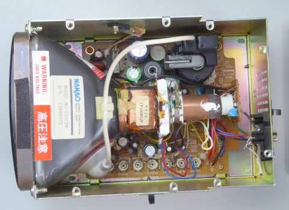 |
取り外したＣＲＴユニットです（上カバーを外した状態）
もしかしたら他社の既製品かも知れません
いわゆるＮＴＳＣビデオ・モニタ・ユニットです
今となっては､ディスプレイ・ユニットが故障した、あるいは焼き付けを起こした場合の交換修理は出来ません
いわゆるメーカー修理受付終了状態です
後期製品（ＩＣ－Ｒ９０００Ｌ）についても同様に修理受付終了となっていますので、このＬＣＤパネルの流用という手も使えないと思われます |
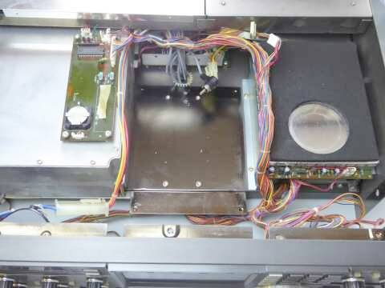 |
ＣＲＴユニットを外すと、ずいぶん間の空いた感じ、中央部に大きな空間が生まれます
ＣＲＴユニットへの接続は、電源ケーブル（６Ｐコネクタ）とＮＴＳＣピンプラグのみで、今回は、それらをそのまま流用（利用）することにしました
|
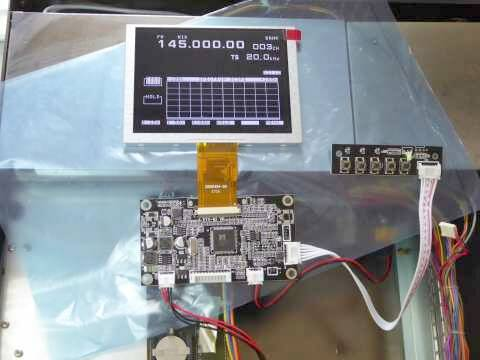 |
仮に､外部からＤＣ１２Ｖを供給して様子をみました
良い感じです！！
期待が持てます
本機の映像信号は、ＮＴＳＣです
使用しないアナログＲＧＢ接続ケーブルは､取り外しました
あとは、大変な工作をすること無く、液晶パネルの取付が出来るかどうかにかかってきました |
|
|
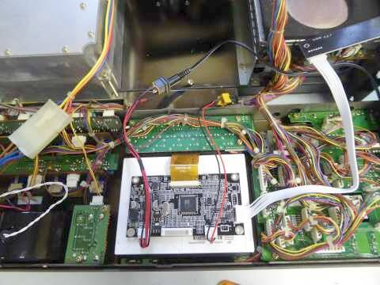 |
色々あてがって考えた結果、元々付いていたＣＲＴ保護材をそのまま活用することにしました
液晶パネルに合わせて､四方を糊付けしました
シリコンゴムもくっつけることが出来る接着剤が出回っています
ＣＲＴ保護材を活用して固定することで、簡単にフロント・パネルから液晶パネルが脱落することは無いでしょう
ＶＧＡ基板は､液晶パネルの裏面に、厚めの両面テープで固定しました |
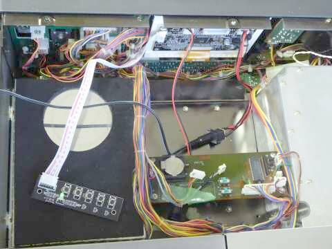 |
液晶パネルのフロント・パネルへの取付はＯＫとして、残りはＣＲＴユニットの上に固定してあった基板と、新たに増えた液晶ディスプレイの設定（調整）ボタンが並んだ基板をどう固定するか・・・
写真のように､宙ぶらりんとはいきません |
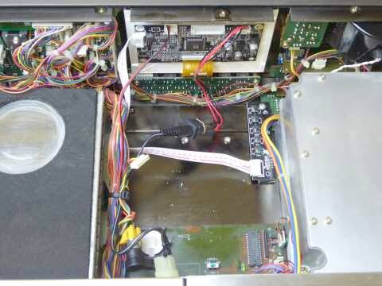 |
ＣＲＴユニットにも簡単に戻せるように、すなわちオリジナルに簡単に戻せるように､新たな加工はしないこととしました（マウント・ベースをひとつ取り付けただけ）
ＣＲＴユニットを取り付けていたビス穴を利用して、２つの基板を取り付けました
基板１枚を一点止めのため､操作をすることで（上から押さえることで）、半田面がシャーシにショートしないよう、厚めのゴム板を基板の下に両面テープで貼り付けています
これでオリジナル（ＣＲＴユニット）にも簡単に戻せますし、液晶ディスプレイ・ユニットもオリジナルのままです |
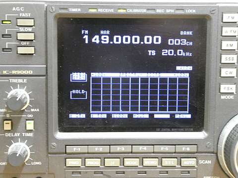 |
今回の作業の結果、最終的に得られたパネル表示です
写真はハレーション気味に見えますが､表示の見え方に問題はありません（同じＶＧＡ！）
本体電源投入直後、右上隅に「AV」と緑の表示が出ますが（左写真で「BANK」に半分重なる）、これは信号入力選択表示で､時間と共に消えますので、これはご愛敬としましょう！
ＣＲＴのアンバー・イエローからは､少々刺激的かも知れませんが、そうそうじっとこの画面を注視することも無いであろうと言うことで、これで良しとしました
実際のところ、特に刺激的とも見えません
それより、フラットな画面が馴染みますし、受信機全体が垢抜けして見えます |
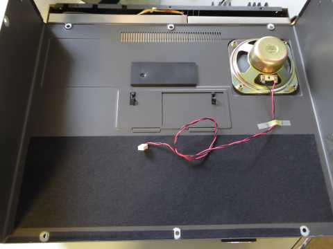 |
外から見て思う以上に大型のスピーカーが内蔵されています
そして上蓋を開けるに十分な余長が見てある基板への接続ケーブル
上蓋にある小窓の下・・・時計用バックアップ電池などは、同じ位置ですがずいぶん奥（下）のほうに移設となりました（ＣＲＴユニットを外したもので） |
|
本機をご使用の方で、ＣＲＴ表示に問題を抱えた方の解決策になるかも知れません（外部ディスプレイを使う手はあります）
ＣＲＴユニットの発熱からすると、ずいぶん省エネに貢献すると思います
同時にいくらか軽量化、です（ＣＲＴユニット単体で、１７４０ｇ） |